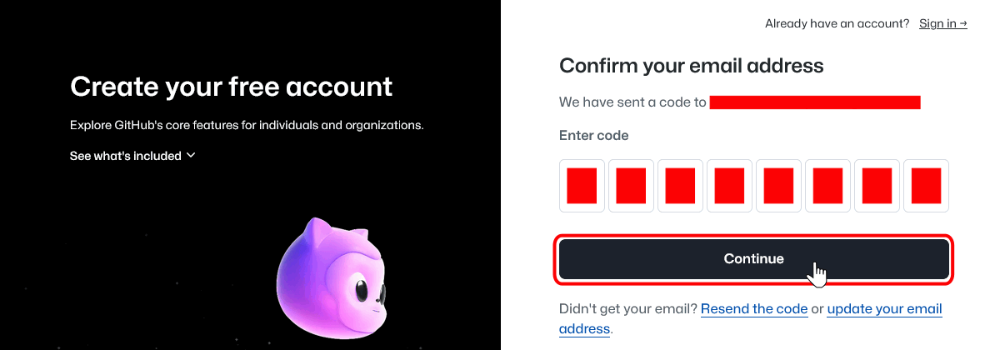

Crear una cuenta en GitHub
Crear una cuenta de GitHub es muy sencillo. Tan sólo se necesita disponer previamente de una cuenta de correo electrónico (gmail, etc.).:
- Abra la página https://github.com.
- Escriba la dirección de correo con la que quiera vincular su cuenta de GitHub y haga clic en "Sign up for GitHub":
- Complete los datos (contraseña, nombre de usuario y país de origen) y haga clic en Continue:
- Para comprobar que somos una persona real, GitHub nos propone un sencillo reto visual. Para realizarlo, haga clic en "Rompecabezas visual":
- Una vez superado el reto, escriba el código de ocho cifras recibido en su cuenta de correo y haga clic en "Continue":

- Automáticamente se abrirá el formulario de acceso a GitHub. Escriba su nombre de usuario o su dirección de correo electrónico y la contraseña elegida y haga clic en "Sign in":
- Inmediatamente se mostrará su panel de usuario de GitHub:

- Para salir de GitHub, haga clic en el icono superior derecho ...
- ... y elija la opción "Sign out":
- GitHub le pedirá confirmación para cerrar la sesión (o todas las sesiones):